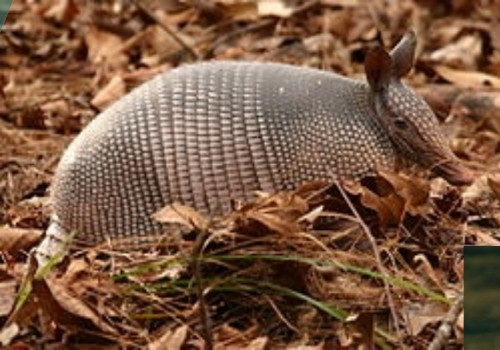
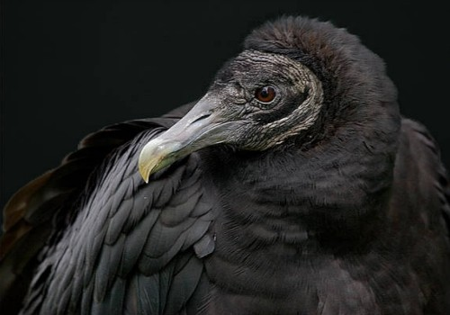
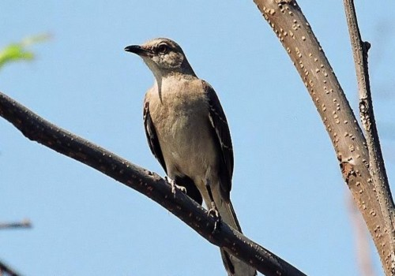

FUNDACIÓN DEL ESTADO
La oficialmente nombrada Heroica Puebla de Zaragoza se fundó por los españoles en 1531 en el valle rodeado por los volcanes de Popocatépetl, Iztaccíhuatl y la Malinche, fuera de los dominios tlaxcaltecas y cholultecas pues las recomendaciones reales de la Metrópoli eran no tomar posesión de territorios indígenas con la intención de probarla exclusivamente por inmigrantes peninsulares. El trabajo de delinear y formar las calles fue dirigido por el fraile Francisco Toribio Benavente, conocido por los indígenas como Motolinía. Se convirtió en la segunda ciudad de importancia en la Nueva España después de la ciudad de México En 1558, recibe el título de Noble y Leal Ciudad de Los Ángeles, por lo que también se suele llamar como Angelópolis. Muchos de sus edificios erigidos en los siglos XVI y XVII han sobrevivido en la traza reticular del estilo renacentista, Canon del urbanismo novohispano, de estilo barroco y que poseen elementos arquitectónicos recurrentes como el petatillo (acomodo peculiar de los ladrillos) y el azulejo. Una de las obras maestras del barroco novohispano está resguardado en el Templo del Santo Domingo: la capilla del Rosario. Está joya arquitectónica fue nombrada como la Casa de oro, la octava maravilla del mundo o por el papa Juan Pablo Segundo como "el relicario del América", durante su visita en 1979 todos los rincones de su interior están recubiertos de estuco dorado y de láminas de oro. En la parte superior de los muros se encuentran las pinturas de José Rodríguez Carnero en los cuales representó los gozos de la Virgen: la Asunción la visitación y el y el nacimiento La ciudad se sitúa en un valle al pie del Popocatépetl conocido por los mexicas cómo Cuetlaxcoapan, "lugar donde las serpientes mudan de piel" .Tiene una ubicación estratégica en la ruta comercial y cultural entre el Puerto de Veracruz y la Ciudad de México, que le permitió ser un punto importante del eje Atlántico por más de dos siglos.
ANIMALES ENDEMICOS
TEJON
TLACUACHE
ARMADILLO
COYOTE
ZOPILOTE
ZENSONTLE